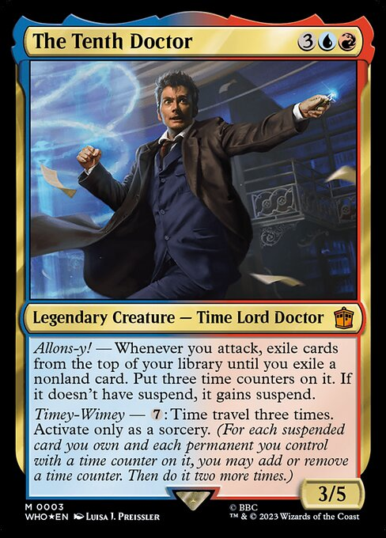
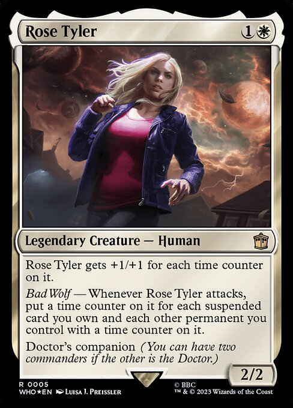

Two commanders can begin in the command zone and still ask completely different questions of the person building the deck.
Count every Partner-family card together and 167 legends produce 2,476 legal commander pairs. That sounds like one colossal menu: pick a commander, pick another, start sleeving. But Partner is not one menu. Sometimes the second slot offers nearly the whole room. Sometimes it asks you to choose a Doctor and a companion. Sometimes it keeps you inside one cast of characters. Sometimes the first card has already written the second card’s name for you.
The better question is not only, “How many pairs are legal?” It is: What kind of choice does each pair create?
The second card changes the question
Two rules account for almost the entire 2,476-pair total.
Open Partner creates 1,953 legal pairs, about 78.9% of the field. Doctor’s companion creates another 459, about 18.5%. Put them together and 2,412 pairs—roughly 97.4%—come from those two rules. Friends forever, Character Select, Survivors, Father & Son, and Named Partner split the remaining 64.
That concentration is the first surprise. The second is more useful: Open Partner and Doctor’s companion do not offer the same kind of choice.
Where the 2,476 command zones come from
The width shows how much of the legal-pair total each kind of choice creates.
Open Partner hands you the whole room
There are 63 Open Partner commanders in this card pool. Pick one and the other 62 are legal choices for the second slot.
That freedom builds quickly. Each card can sit beside every other card, but each command-zone duo only needs to be counted once. The result is 1,953 legal pairs.
This is the version of Partner that earns the mechanic’s wide-open reputation. Your first commander does not assign a role, a product, a story group, or a specific counterpart to the second. It says: choose another legend with Partner.
Malcolm, Keen-Eyed Navigator and Breeches, Brazen Plunderer show what that freedom can look like when the text lines up. Both care about Pirates dealing damage to opponents. Malcolm turns that damage into Treasures. Breeches turns it into temporary access to cards from the damaged opponents’ libraries. They point at the same event, then pay you in different ways.
But Open Partner does not promise that kind of connection. It only gives you permission to look for one.
That difference shows up when the card text joins the count. Of the 1,953 Open Partner pairs, 1,039 care about at least one of the same things—counters, tokens, artifacts, combat, card draw, graveyards, or another shared thread. The other 914 add different jobs to the command zone instead.
That is not a good-pair/bad-pair split. It is a better description of the choice. Open Partner can let you double down on a plan, or it can let one commander bring something the other does not.
Doctor’s companion asks you to fill two roles
Doctor’s companion starts from a different rule. You are not choosing any two cards from one open group. You are choosing across two sides: 27 companions and 17 eligible Doctors.
Every companion can travel with every eligible Doctor. Twenty-seven choices multiplied by seventeen choices creates 459 legal command zones. Two companions do not become legal together through this rule. Neither do two Doctors. One slot must be the Doctor; the other must have Doctor’s companion.
That role split changes what you are browsing for. Start with a companion and you have 17 Doctors to consider. Start with a Doctor and you have 27 companions. The total is smaller than Open Partner, but more importantly, the choice has direction.
The Fugitive Doctor and Martha Jones make that direction feel like Magic instead of multiplication. Both investigate, so either commander can put a Clue on the battlefield. The Fugitive Doctor can sacrifice a Clue while attacking to give an instant or sorcery in the graveyard flashback. Martha rewards sacrificing a Clue by making herself and another creature unblockable for the turn.
The shared resource is the Clue. The two commanders give it different jobs: one reaches back into the graveyard, while the other helps creatures connect in combat. Here the second commander reinforces something the first commander already makes.
That is one legal pair, not a promise about all 459. Across the Doctor-and-companion choices, 207 pairs care about at least one shared thing. The remaining 252 bring different jobs. The rule guarantees the Doctor/companion relationship; the Oracle text decides whether their game plans meet after that.
Some Partner rules keep you with the cast
Friends forever, Character Select, Survivors, and Father & Son do not open the whole Partner collection. Each keeps the second choice inside its own group.
Friends forever has seven eligible cards, creating 21 pairs within that cast. Character Select has six cards and 15 pairs. Survivors has four cards and six pairs. Father & Son contains exactly the relationship its name suggests: two cards, one legal pair.
These mechanics feel open while you are inside them—each member can choose another member—but their walls matter. A Friends forever commander does not pick from the Open Partner roster merely because both rules put two commanders in the command zone.
The name on the mechanic is doing real deckbuilding work. It tells you where the second choice begins and where it stops.
Named Partner writes the answer on the card
Named Partner narrows the choice all the way down. Pir, Imaginative Rascal can share the command zone with Toothy, Imaginary Friend through their named Partner ability. That rule does not let Pir branch into the Open Partner roster, and it does not let Toothy choose a different Battlebond legend. They name each other.
There are 21 legal Named Partner pairs here. Twenty of those pairs care about at least one shared thing in their rules text, and 15 have a direct give-and-take relationship such as making a resource and using it, enabling an action and rewarding it, or increasing something the other commander produces.
Pir and Toothy are a clean example. Toothy turns card draw into +1/+1 counters, then turns those counters back into cards when it leaves the battlefield. Pir adds an extra counter when counters would be placed on one of your permanents. Pir does not merely share the word “counter” with Toothy. Pir enhances what Toothy is already built to do.
Named Partner offers the least legal breadth of the four choices, but the cards are much more likely to arrive with a shared mechanical conversation already printed on them. Fewer legal options does not mean less design. It means the choice happened earlier, on the cards themselves.
Four ways a commander finds company
Pick a rule and watch the second slot change from a room, to a role, to a cast, to one named card.
Choose a rule to deal a real example into the command zone.
The second commander adds a job, not just a color
This is the part a legal-pair count misses on its own.
A second commander can add white to a red-green command zone. It can also add a way to spend the Clues your first commander makes. It can turn card draw into counters, turn counters back into cards, reward the same combat trigger twice, make tokens, recur cards, copy spells, protect a board, or give an existing resource another use.
Those are different kinds of additions.
That distinction matters whenever players talk about Partner as though it were one problem or one solution. A free commander, a card-draw engine, a color key, and a named build-around may all put two cards in the command zone, but they are not doing the same job. Before judging Partner as a whole, ask which card, which pairing, and which job you actually mean.
Sometimes the second commander follows the same trail. Sometimes it gives a resource from the first commander another use. Sometimes it pushes an existing engine further. And sometimes it simply brings a different job to the command zone. Those are all legitimate reasons to choose a pair, but they create very different decks.
This also puts a boundary around the result. Shared words and linked roles do not prove the best build, a combo, power, popularity, or how the deck feels in a game. They let us ask a much better Commander question than “Can these two cards sit together?”
They let us ask, “What will each one do once they get there?”
Most second commanders add one color
Color identity is the easiest change to see when a second commander enters the command zone. Start with whichever commander already brings more colors, then ask how many colors the other card adds.
Across all 2,476 legal pairs:
- 799 add no new colors.
- 1,637 add exactly one color.
- 40 add two colors.
So the ordinary Partner color story is not a leap into a completely different color structure. About two out of every three pairs add one color. Adding two is rare.
What changes when the second card lands?
The mana symbols show color access. Choose each result to see why that is only half the choice.

The Tenth Doctor
Rose TylerThat one color can matter enormously to the ninety-eight cards that follow, but it is still only one part of the second commander’s job. Rose Tyler adds white beside The Tenth Doctor’s blue and red. The Doctor puts spells into suspend with time counters; Rose counts those suspended cards when she attacks and turns the clock into power.
Mana tells you which tools are legal. The commanders’ text tells you what they are trying to build with them.
Four-color doors do not open evenly
Partner can reach every four-color identity, but it does not reach them equally.
There are 69 four-color legal pairs. Thirty-five are WURG—the blackless identity. That is just over half of every four-color route in the card pool. WUBG, the redless identity, appears only seven times. The other three identities land at eight, eight, and eleven pairs.
Four colors, five very different routes
Pick the missing color. The command-zone identity stays four-color; the number of legal ways into it changes.
Just over half of the four-color routes land here.
The gap is not a claim that blackless decks are better, more popular, or more varied in play. It means a player looking for that exact four-color command zone has 35 legal Partner-family routes, while a player looking for the redless identity has seven.
The doors exist. They are not equally wide.
Flexible color choices do not add another four-color door
The Prismatic Piper and Clara Oswald make color choice part of deck construction. That flexibility changes which color they bring, but none of those choices creates another four-color destination here. They change the route, not the map.
Legal is where deckbuilding starts
The 2,476 pairs are real choices, but they are not 2,476 strategically distinct decks waiting to be ranked.
The Partner-family rule tells you who is allowed in the second command-zone slot. Color identity tells you which cards may join them. Oracle text starts to show whether the commanders share a resource, divide the work, or pull the deck in two different directions. The remaining ninety-eight cards decide what you actually build.
That is why “Partner” is the beginning of the explanation, not the end. Open Partner asks you to search a wide field. Doctor’s companion asks you to match two roles. The closed mechanics keep you with one cast. Named Partner hands you one specific relationship.
When you put a second commander in the command zone, ask two questions: What kind of choice gave me this card, and what job does it add?
The first question explains the 2,476. The second one starts the deck.
Five casts, five different pairings
These are legal examples, not recommendations. Pick a family, then open the pair to see what each card brings.
A legal pairing tells you who may share the command zone. The card text starts the deckbuilding conversation.